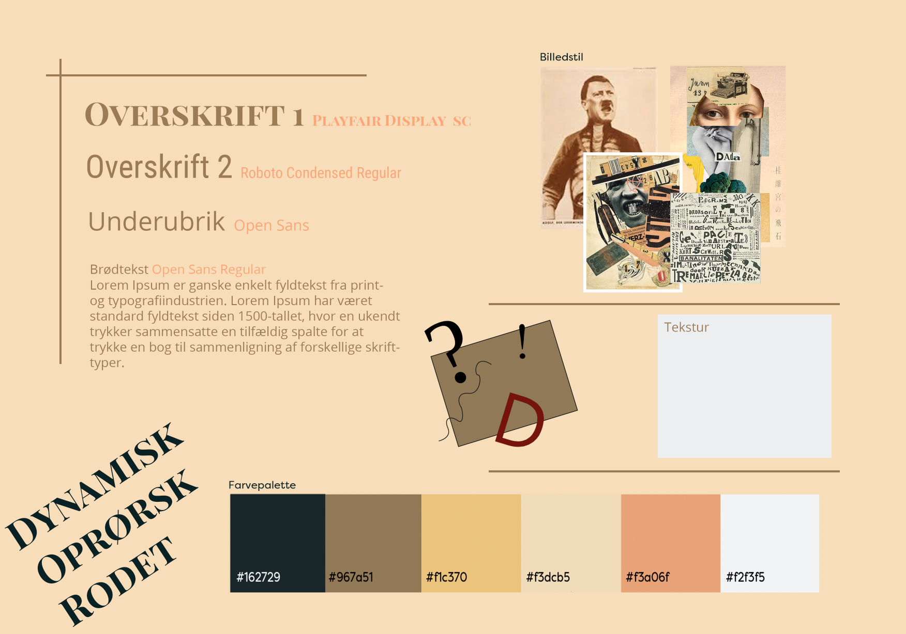
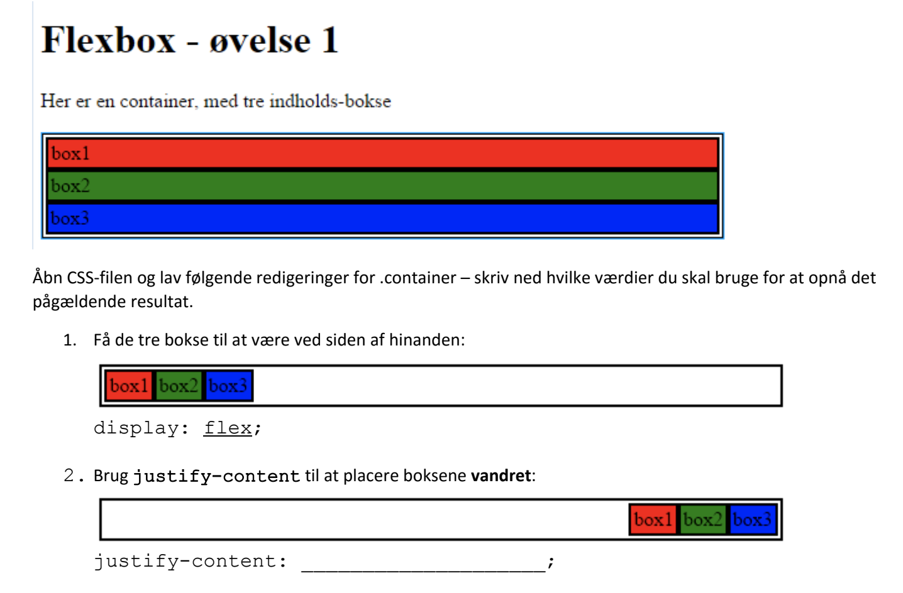

I dette tema skulle vi udføre en af de første større opgaver - et færdigt stilartsite. I mit tilfælde om stilarten Dadaismen, til målgruppen 13-16 årige. Jeg startede derfor med at lave en grundig analyse af stilarten ved at undersøge farver, teksture, former, og skrifttyper der karakteriserede Dadaismen.
Samtidigt lavede jeg et moodboard, for at vise jeg havde forståelse for den stilart jeg havde fået.
Moodboardet blev lavet i photoshop, hvor jeg brugte følgende værktøjer:
Efter min research på karakeristika i dadaismen, lavede jeg et styletile. Her samlede jeg de farver, former og de fonte jeg ville bruge til mit stilartsite om Dadaismen. Jeg lavede i løbet af temaet også mit styletile i CSS, som kan ses her.
Jeg skulle nu til at lave websitet, ud fra det grundlæggende html (Hyper Text Markup Language) og CSS (Cascading Style Sheet) vi havde lært, ud fra små opgaver i løbet af undervisningen. Her lærte vi samtidig flexbox, hvor vi fik de forskellige bokse i øvelsen til at sætte sig ved siden af hinaden, køre under hinanden osv. Dette brugte vi i vores CSS styling, for at lave et responsivt site.
Jeg blev færdig med mit stilartsite, om Dadaisme, som jeg selv er tilfreds med, og som jeg lærte meget af, jeg har kunent bruge fremover.
Jeg syntes overordnet at denne opgave, og processen dertil var rigtig god, og overskuelig. Vi lavede det trin for trin, og jeg kunne rigtig godt lide, at hjemmesiden blev sat op inde i InDesign, og derefter i HTML og CSS. Det skabte et godt overblik.